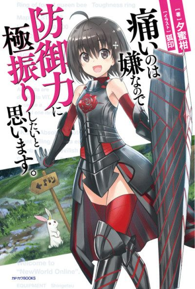

Anime
Anime
Light novel2020 · Action, Adventure, Comedy
BOFURI: I Don't Want to Get Hurt, so I'll Max Out My Defense.
痛いのは嫌なので防御力に極振りしたいと思います。
AniList7.3
Animeter—
2 seasons24 ep
SourceVol. 10
Anime finished. Where does the story go next?
Start at Volume10
Season 2 ends at volume 9, so start at volume 10. The light novel is finished at 19 volumes.
14919 end
Season 1Season 2Start reading here